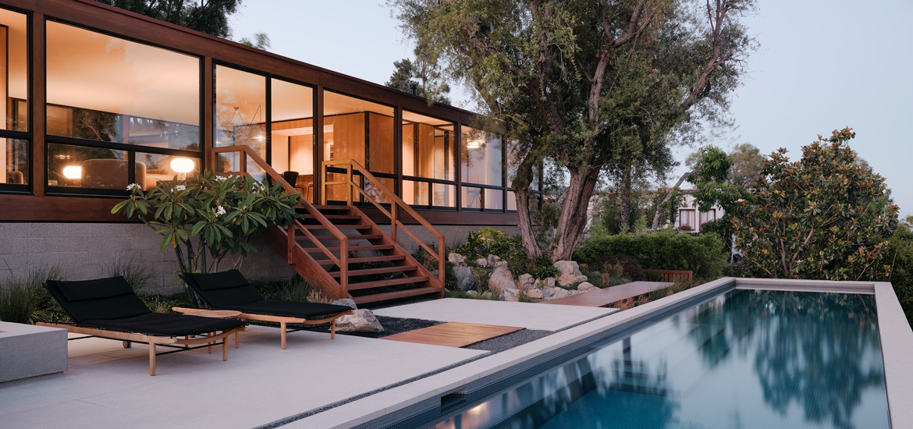

<section id="about-id" class="about-class">
  <div class="container">
    <div class="row">

      <div class="col-lg-6 px-0" data-aos="fade-up" data-aos-duration="1000">
        <!-- H2 tage can be change for other action -->
        <!-- <h2 class="text-center">Interior Design</h2> -->
        
      </div>
      <div class="col-lg-6 about-content d-flex flex-column justify-content-center" data-aos="fade-up" data-aos-duration="1000">
        <div class="wrap">
          <h2 class="text-center">About This Website</h2>
          <p>This website have been made purely with HTML, CSS, javaScript
           <br>J-Query.
          Bootstrap:  The only code just Contact.html combined Form Code has been taken from
          Bootstrap!   Thanks, Bootstrap.
The food has also been decorated with Bootsrap methodology.

</p>
          <p>All the files have been added to the GitHub account.
            All the hard code have been divided into small different Html pages
            for the simplicity to read and change after according to
            customer demand.
            !</p>
        </div>
      </div>
    </div>
  </div>
</section>
